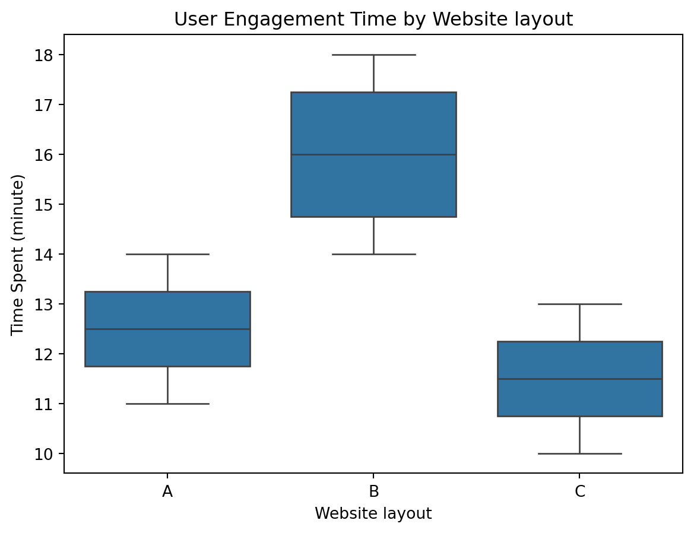

# Load the necessary libraries
import pandas as pd
from scipy import stats
import statsmodels.api as sm # for statistical analysis
from statsmodels.formula.api import ols # for statistical analysis
import seaborn as sns # to plot charts
import matplotlib.pyplot as plt # to plot chartsIn this blog, we’ll explore how to perform a One-Way ANOVA in Python to compare the means of multiple groups and assess if they are statistically different.
Introduction to One-Way ANOVA in Python
When analyzing data, one of the key tasks is to determine whether the means of different groups are significantly different from one another. One powerful statistical test to help with this is the Analysis of Variance (ANOVA), specifically the One-Way ANOVA. This technique is used when you have one independent categorical variable and want to compare the means of two or more groups on a continuous dependent variable.
One-Way ANOVA tests the null hypothesis that the means of several groups are equal, versus the alternative hypothesis that at least one group mean is different. It’s particularly useful when dealing with experiments or observational studies that involve comparisons across multiple groups or categories.
In Python, we can easily perform One-Way ANOVA using libraries like SciPy and Statsmodels, which offer user-friendly methods for statistical analysis. In this tutorial, we will walk through the steps of carrying out a One-Way ANOVA in Python, from setting up the data to interpreting the results.
When to Use One-Way ANOVA:
You have one categorical independent variable with two or more groups (e.g., treatment types or different locations).
The dependent variable is continuous (e.g., height, weight, test scores).
The data should meet assumptions such as normality within each group and homogeneity of variances.
In the following sections, we will use Python to:
Set up and explore the data.
Perform One-Way ANOVA using
scipy.statsandstatsmodels.Interpret the ANOVA results and check assumptions.
Load the necessary libraries
# Data setup
data = {
'Group': ['Group 1', 'Group 2', 'Group 3', 'Group 4'] * 3,
'Layout': ['A'] * 4 + ['B'] * 4 + ['C'] * 4,
'Time_Spent': [12, 14, 11, 13, 15, 18, 14, 17, 10, 13, 12, 11]
}
df = pd.DataFrame(data)
print("\nData on time spent\n", df)
Data on time spent
Group Layout Time_Spent
0 Group 1 A 12
1 Group 2 A 14
2 Group 3 A 11
3 Group 4 A 13
4 Group 1 B 15
5 Group 2 B 18
6 Group 3 B 14
7 Group 4 B 17
8 Group 1 C 10
9 Group 2 C 13
10 Group 3 C 12
11 Group 4 C 11# Performing one-way ANOVA
model = ols('Time_Spent ~ C(Layout)', data = df).fit()
anova_table = sm.stats.anova_lm(model,typ=2)# Printing the ANOVA table
print(anova_table) # reject Ho (null hypothesis) if p-value is less than 0.05 which says there's no diff in means in the groups
print(model.summary()) sum_sq df F PR(>F)
C(Layout) 44.666667 2.0 10.05 0.005088
Residual 20.000000 9.0 NaN NaN
OLS Regression Results
==============================================================================
Dep. Variable: Time_Spent R-squared: 0.691
Model: OLS Adj. R-squared: 0.622
Method: Least Squares F-statistic: 10.05
Date: Mon, 07 Oct 2024 Prob (F-statistic): 0.00509
Time: 12:49:41 Log-Likelihood: -20.092
No. Observations: 12 AIC: 46.18
Df Residuals: 9 BIC: 47.64
Df Model: 2
Covariance Type: nonrobust
==================================================================================
coef std err t P>|t| [0.025 0.975]
----------------------------------------------------------------------------------
Intercept 12.5000 0.745 16.771 0.000 10.814 14.186
C(Layout)[T.B] 3.5000 1.054 3.320 0.009 1.115 5.885
C(Layout)[T.C] -1.0000 1.054 -0.949 0.368 -3.385 1.385
==============================================================================
Omnibus: 2.312 Durbin-Watson: 3.525
Prob(Omnibus): 0.315 Jarque-Bera (JB): 0.932
Skew: -0.000 Prob(JB): 0.628
Kurtosis: 1.635 Cond. No. 3.73
==============================================================================
Notes:
[1] Standard Errors assume that the covariance matrix of the errors is correctly specified.C:\Users\user\AppData\Local\Programs\Python\Python311\Lib\site-packages\scipy\stats\_axis_nan_policy.py:418: UserWarning: `kurtosistest` p-value may be inaccurate with fewer than 20 observations; only n=12 observations were given.
return hypotest_fun_in(*args, **kwds)# Post-hoc test (Tukey's HSD)
from statsmodels.stats.multicomp import pairwise_tukeyhsd
tukey = pairwise_tukeyhsd(endog=df['Time_Spent'], groups=df['Layout'], alpha=0.05)
print(tukey)Multiple Comparison of Means - Tukey HSD, FWER=0.05
==================================================
group1 group2 meandiff p-adj lower upper reject
--------------------------------------------------
A B 3.5 0.022 0.557 6.443 True
A C -1.0 0.6251 -3.943 1.943 False
B C -4.5 0.0053 -7.443 -1.557 True
--------------------------------------------------# Visualizing the results
sns.boxplot(x='Layout', y='Time_Spent', data=df)
plt.title('User Engagement Time by Website layout')
plt.xlabel('Website layout')
plt.ylabel('Time Spent (minute)')
plt.show()